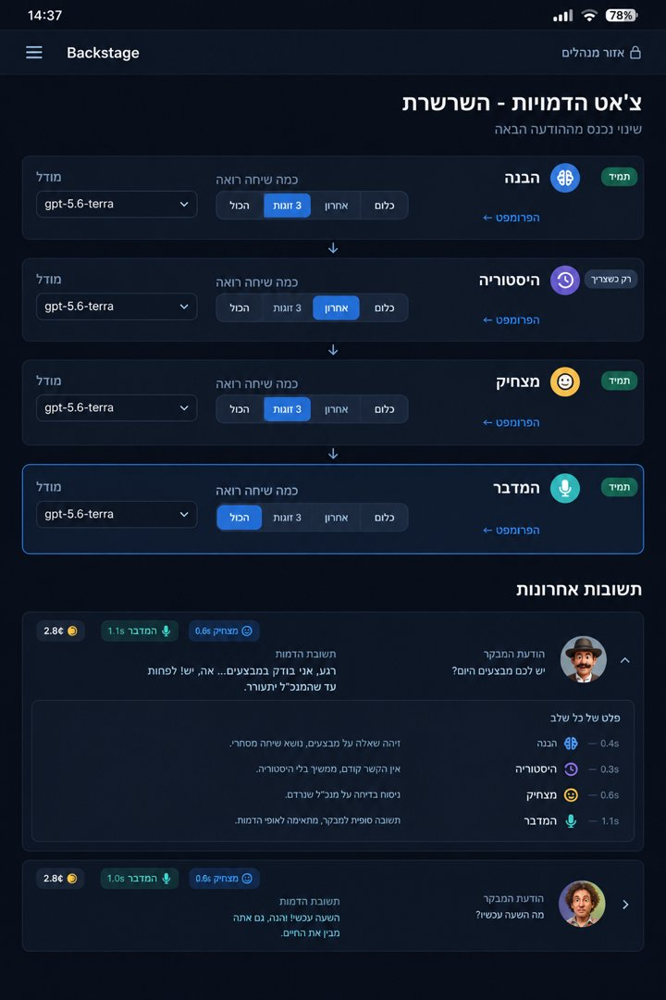

היום כל תשובה של דמות בצ'אט היא קריאה אחת למודל, שצריכה להחזיק הכול בבת אחת: הפרופיל, הסרטונים, השיחה, למצוא את התשובה - וגם להיות מצחיקה בקול של הדמות. זה יותר מדי למוח אחד, ומה שנופל הוא הטון. התוכנית: לפרק את התשובה לשלבים, כל שלב קריאה משלו עם תפקיד אחד, והפלט של כל שלב מזין את הבא - שרשרת. ככה הדמויות מגיבות מצחיק כמו בסרטונים.
הכול נכנס, הכול מתחרה על תשומת הלב. הטון והבדיחה מפסידים.
כל שלב מחזיק רק את מה שהוא צריך. מי שכותב את התשובה מקבל פתקים קצרים מהשלבים שלפניו - ואת כל תשומת הלב שלו שם על הקול ועל הבדיחה.
ארבעה תוספים, אחד אחרי השני. כל אחד בוחר כמה מהשיחה הוא רואה (נספר בזוגות: הודעה של המבקר + התשובה של הדמות), כל אחד עם מודל משלו, וכולם קוראים וכותבים במוח של השיחה. הפרופיל של הדמות נמצא בכל שלב - הוא הטון.
מה המבקר רוצה, איך הדמות שומעת את זה, והאם זה נוגע במשהו שקרה לה.
כשנוגעים במשהו שקרה לדמות - קורא את התסריטים המלאים ומוציא מה באמת קרה ומה נאמר.
איפה הבדיחה של הדמות הזאת כאן - מהלוגיקה שלה, לא בדיחה כללית. כולל האם משפט מחץ מתאים עכשיו.
מקבל הכול - את כל השיחה, את הפרופיל, את מה שמצחיק, ואת הפתקים - ומחליט בדיוק איך זה נשמע. רואה כמה משפטי מחץ כבר היו בשיחה, ומשתמש בשכל הישר.
| הבנה | היסטוריה | מצחיק | המדבר | |
|---|---|---|---|---|
| הפרופיל | כן | כן | כן | כן |
| מה מצחיק + משפטי מחץ | - | - | כן | כן |
| אינדקס החייםשורה לכל סרטון שלו | כן | כן | - | - |
| תסריטים מלאים | - | רק של מה שנבחר | - | - |
| מי הוא מכיר + האתר | כן | - | - | כן |
| המוח של השיחה | קורא + כותב | קורא + כותב | קורא | קורא + כותב |
| הפתקים מהשלבים הקודמים | - | של הבנה | של הבנה + היסטוריה | של כולם |
| השיחה | 3 זוגות | השאלה + זוג | 3 זוגות | הכול |
| מודל (התחלה) | Terra | Terra | Terra | Terra |
כל מספר כאן הוא נקודת התחלה - המודל וכמה שיחה רואים משתנים מבקסטייג' (סעיף 6).
התפקיד: האוזן הפנימית של הדמות. קורא את ההודעה בהקשר של השיחה ומחליט מה קורה פה - בלי לכתוב תשובה.
ההוראות בקצרה: "אתה האוזן הפנימית של חני. הבן מה המבקר רוצה בהודעה האחרונה, כמו שחני הייתה שומעת את זה. בדוק מול אינדקס החיים שלה אם זה נוגע במשהו שקרה לה. שאלה על העבר שלה ('יצא לך פעם', 'מה קרה עם', 'את זוכרת') - תמיד בקש חיפוש, גם כשלא רואים התאמה."
| סוג | שיחת חולין · דעה · משהו שקרה לי · סרטון · מישהו אחר · האתר · בעיה אמיתית |
| מה הוא רוצה | משפט אחד |
| נוגע בהיסטוריה | מזהי סרטונים, או מילים לחיפוש, או "לא" |
| המשך של | האם זה המשך לאירוע שכבר במוח של השיחה |
| אנשים | מי הוזכר |
| אורך | קצר / בינוני / סיפור |
התפקיד: הזיכרון של הדמות. רץ רק כשההבנה אמרה שזה נוגע במשהו שקרה לה. קורא את התסריטים המלאים של הסרטונים שנבחרו (או מה שהחיפוש מצא) ומוציא את העובדות.
ההוראות בקצרה: "מצא מה באמת קרה ומה נאמר. ציטוטים מדויקים בלבד. אם זה לא שם - תגיד שלא נמצא. אסור להמציא."
| נמצא | כן / לא |
| מה קרה | טקסט חופשי, כמה משפטים |
| מה נאמר | ציטוטים מדויקים מהתסריט |
| סרטון להראות | מזהה, או כלום |
לא נמצא - הדמות אומרת שהיא לא זוכרת. אף פעם לא ממציאה אירוע.
התפקיד: חדר הכותבים. מקבל את מה שמצחיק בדמות (המנוע הקומי שלה, ההרגלים, משפטי המחץ) ואת הפתקים - ומחפש את הזווית. כאן קורה החשיבה העמוקה על ההומור.
ההוראות בקצרה: "איפה הבדיחה של חני כאן? מהלוגיקה שלה ומהעיוורון שלה - לא בדיחה כללית עם משפט מחץ מלמעלה. אם משפט מחץ מתאים, איזה, ורק אם הוא לא נאמר זה עתה."
| הזווית | איך הדמות רואה את זה |
| הבדיחה | מה מצחיק ולמה |
| קולבק | משהו מהשיחה או מההיסטוריה שאפשר להחזיר |
| משפט מחץ | איזה, או "לא הפעם" |
התפקיד: הדמות עצמה. מקבל הכול ואת כל השיחה, ומחליט בדיוק איך זה נשמע: המילים, הקצב, העברית שלה (בני ברק, רוסית, ג'ן זי), האורך. רואה את כל מה שכבר נאמר, ולכן לא חוזר על אותה פתיחה ולא שם משפט מחץ בכל משפט - שכל ישר, לא מונה.
ההוראות בקצרה: הפרופיל + מה מצחיק + כללי הצ'אט (כרטיסים של סרטון / דמות / אתר, בטיחות) + "כתוב את התשובה של חני. הפתקים הם הכיוון, הקול הוא שלך."
| טקסט | התשובה עצמה, נכתבת למבקר מילה אחרי מילה (בלי לחכות לסוף) |
כן - לכל שיחה יש מוח פעיל משלה. זיכרון קטן שחי לאורך השיחה הזאת (נשמר עם מזהה השיחה), שכל שלב קורא ממנו וכותב אליו. ככה שאלת המשך לא מתחילה מאפס.
| מה יש בו | מי כותב | מי קורא |
|---|---|---|
| הנושא עכשיו - על מה מדברים | הבנה | כולם |
| האירוע הפתוח - הסרטון שמדברים עליו, מה נמצא בו והתסריט שלו | היסטוריה | הבנה, היסטוריה, המדבר |
| מה המבקר סיפר - שם, מאיפה, מה הוא אוהב | הבנה | מצחיק, המדבר |
| מה כבר נאמר - סיפורים ובדיחות שכבר סופרו, כדי לא לחזור | המדבר | מצחיק, המדבר |
"והילדים היו איתו באוטו?" - ההבנה רואה במוח שאנחנו עדיין על התאונה. ההיסטוריה לא מחפשת מחדש: היא קוראת שוב את התסריט שכבר מחזיקה, ומעמיקה בפרט שנשאל. כשהנושא מתחלף - האירוע יוצא מהמוח.
שיחה אחת. שיחה חדשה מתחילה במוח ריק. (זיכרון של מבקר בין שיחות - "חזרת! איך הייתה החתונה?" - אפשרות לשלב מאוחר יותר, לא בתוכנית הזאת.)
ארבע הודעות, ומה רץ בכל אחת. התשובות כאן להמחשה בלבד - את הנוסח האמיתי כותב המדבר.
הבנה: שיחת חולין, לא נוגע בהיסטוריה, קצר.
הבנה: משהו שקרה לי. באינדקס: "יומני הרישום, הקידוש והגדויילים" (1.11) מזכיר תאונה. אורך: סיפור.
היסטוריה: נמצא. ביום שישי אברהם משה עשה תאונה, האוטו כמעט טוטאל לוס, חצי יום במיון, "בקושי הספקתי להכין לשבת". דווקא בשישי הזה היא לקחה את הילדים ולא הוא. ציטוט: "תחשבי אם הילדים היו איתו באוטו! וואו, איזו השגחה פרטית!"
מצחיק: הזווית - היא מספרת אסון כשרשרת של ניסים, וכל פרט רע הוא עוד הוכחה לחסדי השם. משפט מחץ: "חסדי השם" מתאים, הוא בסיפור עצמו.
הבנה: המשך של התאונה (מהמוח של השיחה).
היסטוריה: בלי חיפוש - אותו תסריט שכבר במוח: היא לקחה אותם, הוא היה צריך להקדים לכולל.
מצחיק: קולבק ל"השגחה פרטית" שהיא כבר אמרה - בלי לחזור על אותו משפט מחץ.
הבנה: שאלה על העבר שלה ("יצא לך פעם"). באינדקס אין כותרת על רכבת - ולכן לפי הכלל: חיפוש "רכבת כיוון הפוך".
היסטוריה: החיפוש מוצא את "בוקר של סייעתא דשמיא" (25.10): "כמעט עליתי על הרכבת לכיוון ההפוך... אין סיכוי שהייתי מספיקה לפגישה."
שורה לכל סרטון של הדמות מול ההבנה, כדי שתזהה "זה על התאונה". לרוב הדמויות 5 עד 20 שורות - זול.
שאלה על העבר ("יצא לך פעם", "מה קרה עם", "את זוכרת") תמיד מפעילה חיפוש בתסריטים, גם בלי התאמה באינדקס. החיפוש כבר קיים באתר, כ-0.6¢.
שורה באינדקס יכולה לפספס משפט שנאמר בדרך אגב. החיפוש קורא את התקצירים של כל הסרטונים, אז הוא תופס גם את זה.
מסך קטן לבדיקה מדי פעם, לא בילדר: שורה לכל תוסף, ותשובות אחרונות עם מה שכל שלב חשב.

השינוי נכנס מההודעה הבאה, בלי דיפלוי.
| הודעה | שלבים | עד המילה הראשונה | עלות |
|---|---|---|---|
| שיחת חולין | הבנה → המדבר | כמו היום, פחות משנייה וחצי | כמו היום |
| דעה / שאלה | הבנה → מצחיק → המדבר | 2 עד 3 שניות | ~2.5¢ |
| משהו שקרה לדמות | כל הארבעה | 3 עד 5 שניות ("חני מקלידה...") | ~3 עד 4¢ |
הערכות - נמדדות במבחן. מתחת לתקרה של 5¢. השלבים העמוקים מחזיקים רק את החומר של הדמות, לא את כל הוויקי - אחרת חמש קריאות היו עוברות את התקרה.